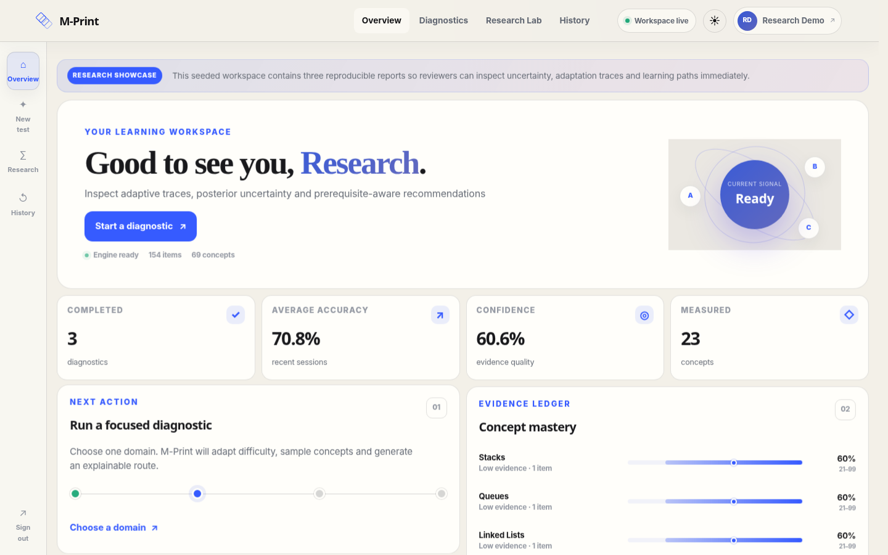

← Selected work
Adaptive AI · Bayesian evidence · Full-stack
M-Print
An exploratory cognitive-learning engine that models response-level signals, prerequisite structure and inspectable adaptive feedback.
Evidence status: Public engineering prototype; no independently validated psychometric diagnoses, cognitive styles or longitudinal learning effectiveness.
Explore public code ↗
Why this
project exists.
Most assessment systems reduce a learner to a score. M-Print was framed around a harder question: what evidence supports the conclusion, how uncertain is it, and which prerequisite-aware action can be defended from that evidence?
The design problem
Adaptive testing can easily become a black box: the system changes difficulty, produces a label and never shows the decision trail. That is especially dangerous when a learner or institution may treat the output as objective.
The project therefore separates global ability targeting from concept-level mastery. It also treats unfinished evidence as provisional and prevents clients from submitting items the server never issued.
System architecture
Evaluation logic
The repository includes reproducible simulations comparing adaptive, fixed and random policies across synthetic learner profiles. The analysis records both gains and regressions instead of selecting only favourable metrics.
The strongest boundary is explicit: simulation validation does not establish human psychometric validity. Human calibration, test-retest reliability, accessibility work and differential-item-functioning analysis remain future requirements.
The product claim is not “AI knows the learner.” It is “the system can show the evidence behind a bounded estimate.”
Latest evidence snapshot
The public repository documents a Python/FastAPI learning prototype with response logging, graph-oriented learning routes, a heuristic scoring layer and a browser interface.
Observed behavior is not a clinically or psychologically validated cognitive diagnosis. Interfaces and algorithms should be assessed separately from claimed improvement in human learning.
The code can be inspected. Its pedagogical and psychometric validity remains a question for future study.